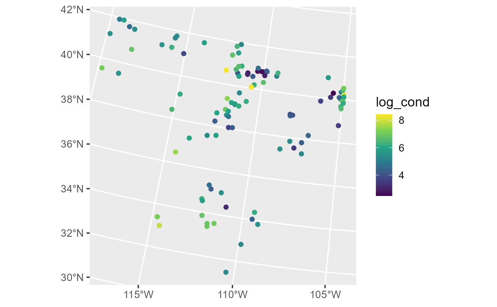
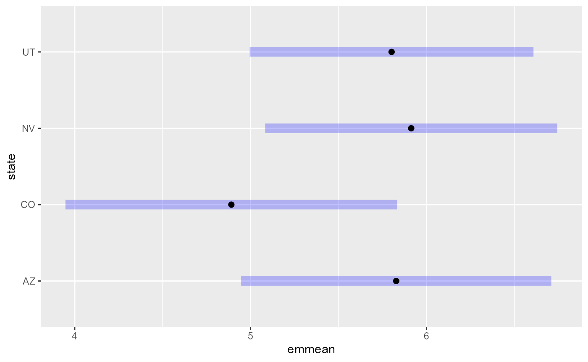
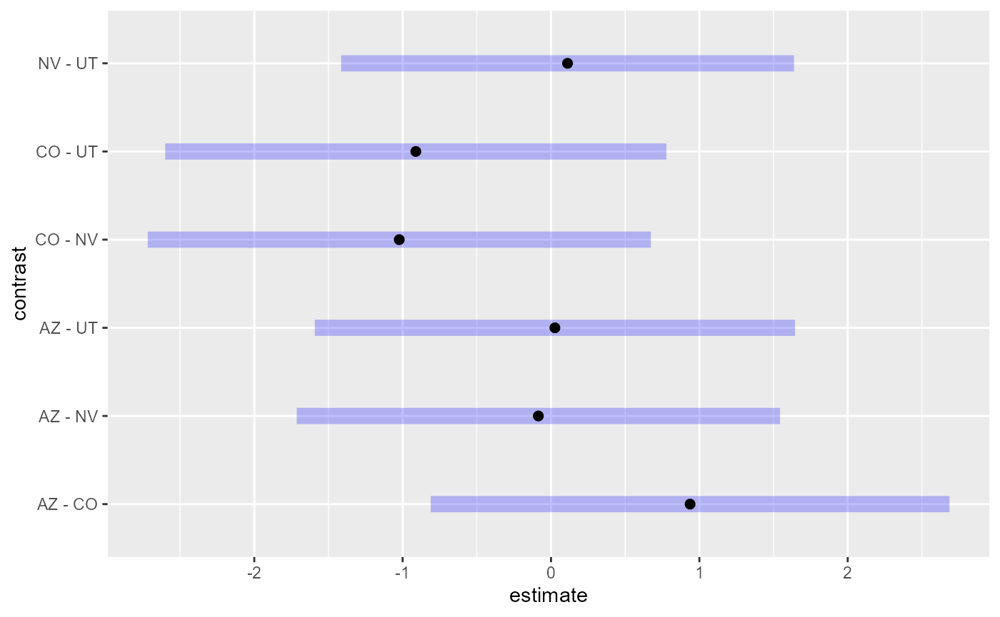
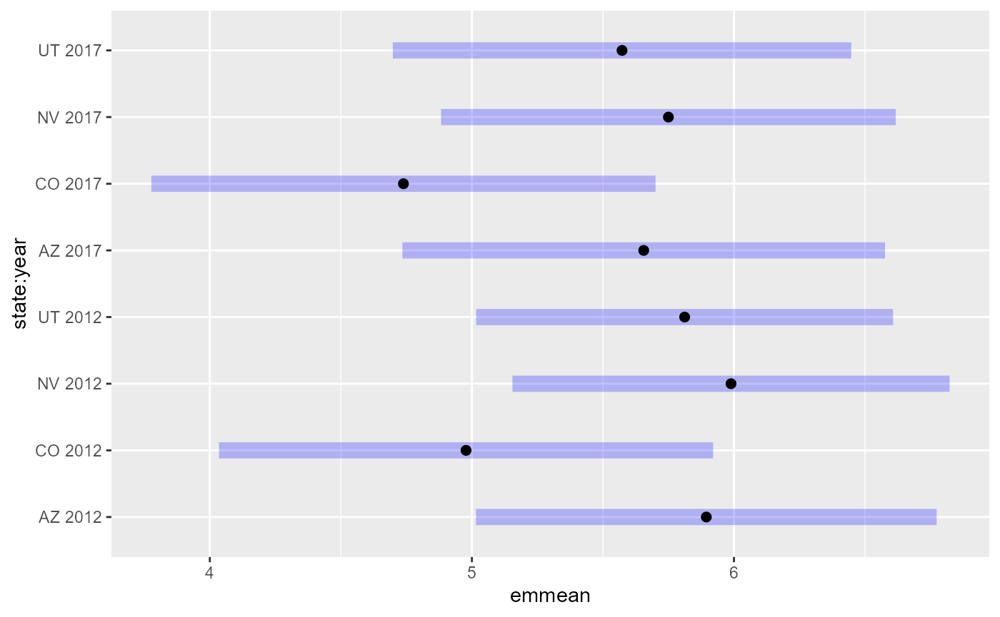
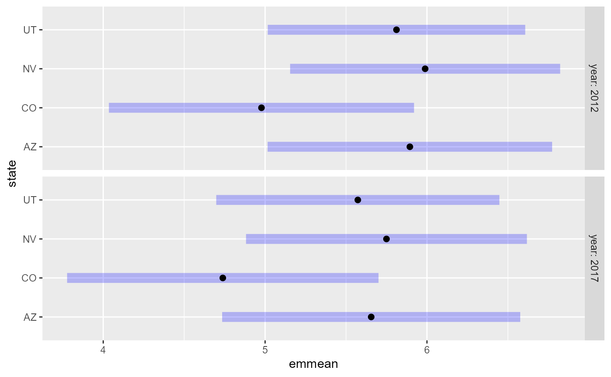
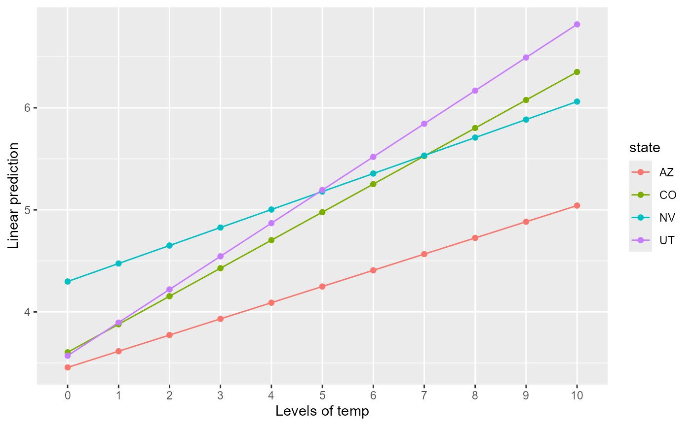

vignettes/articles/emmeans.Rmd
emmeans.Rmdspmodel is an R package used to fit,
summarize, and predict for a variety of spatial statistical models. The
vignette provides an estimating marginal means (i.e., least-squares
means) of spmodel objects using the emmeans.
R package (Lenth 2024).
Before proceeding, we load spmodel and emmeans
by running
If using spmodel in a formal publication or report,
please cite it. Citing spmodel lets us devote more
resources to the package in the future. We view the spmodel
citation by running
citation(package = "spmodel")#> To cite spmodel in publications use:
#>
#> Dumelle M, Higham M, Ver Hoef JM (2023). spmodel: Spatial statistical
#> modeling and prediction in R. PLOS ONE 18(3): e0282524.
#> https://doi.org/10.1371/journal.pone.0282524
#>
#> A BibTeX entry for LaTeX users is
#>
#> @Article{,
#> title = {{spmodel}: Spatial statistical modeling and prediction in {R}},
#> author = {Michael Dumelle and Matt Higham and Jay M. {Ver Hoef}},
#> journal = {PLOS ONE},
#> year = {2023},
#> volume = {18},
#> number = {3},
#> pages = {1--32},
#> doi = {10.1371/journal.pone.0282524},
#> url = {https://doi.org/10.1371/journal.pone.0282524},
#> }In this section, we use the point-referenced lake data,
an sf object that contains data on lake conductivty for
some southwestern states (Arizona, Colorado, Nevada, Utah) in the United
States. We view the first few rows of lake by running
lake#> Simple feature collection with 102 features and 8 fields
#> Geometry type: POINT
#> Dimension: XY
#> Bounding box: xmin: -2004016 ymin: 1031593 xmax: -753669.4 ymax: 2338804
#> Projected CRS: NAD83 / Conus Albers
#> # A tibble: 102 × 9
#> comid log_cond state temp precip elev origin year
#> * <chr> <dbl> <chr> <dbl> <dbl> <dbl> <chr> <fct>
#> 1 20451100 6.32 AZ 12.7 4.94 1567 HUMAN_MADE 2012
#> 2 20476542 7.02 AZ 21.8 5.78 459 HUMAN_MADE 2012
#> 3 10001770 7.13 AZ 23.2 0.912 69.1 HUMAN_MADE 2012
#> 4 20584396 6.17 AZ 11.2 4.44 1822 HUMAN_MADE 2012
#> 5 20524727 5.48 AZ 8.31 6.12 2168 HUMAN_MADE 2012
#> 6 20479908 7.00 AZ 22.4 2.31 366. HUMAN_MADE 2012
#> 7 10001834 7.85 AZ 23.5 0.989 57.7 NATURAL 2012
#> 8 20695686 4.77 AZ 9.13 5.91 2072. HUMAN_MADE 2012
#> 9 21327603 5.30 AZ 17.9 2.83 1006. HUMAN_MADE 2012
#> 10 20449310 4.33 AZ 9.79 6.14 1998. HUMAN_MADE 2012
#> # ℹ 92 more rows
#> # ℹ 1 more variable: geometry <POINT [m]>We can learn more about lake by running
help("lake", "spmodel"), and we can visualize the
distribution of log conductivity in lake by state and year
by running
ggplot(lake, aes(color = log_cond)) +
geom_sf() +
scale_color_viridis_c() +
theme_gray(base_size = 14)
Distribution of log conductivity in the lake data.
First we explore a single-factor model that characterizes the response variable, log conductivity, by each state (AZ, CO, NV, UT). We fit and summarize this model by running:
spmod1 <- splm(
formula = log_cond ~ state,
data = lake,
spcov_type = "exponential"
)
summary(spmod1)#>
#> Call:
#> splm(formula = log_cond ~ state, data = lake, spcov_type = "exponential")
#>
#> Residuals:
#> Min 1Q Median 3Q Max
#> -3.1485 -0.9733 0.0490 0.8168 3.2232
#>
#> Coefficients (fixed):
#> Estimate Std. Error z value Pr(>|z|)
#> (Intercept) 5.82803 0.41633 13.999 <2e-16 ***
#> stateCO -0.93746 0.60188 -1.558 0.119
#> stateNV 0.08518 0.57571 0.148 0.882
#> stateUT -0.02632 0.54839 -0.048 0.962
#> ---
#> Signif. codes: 0 '***' 0.001 '**' 0.01 '*' 0.05 '.' 0.1 ' ' 1
#>
#> Pseudo R-squared: 0.03776
#>
#> Coefficients (exponential spatial covariance):
#> de ie range
#> 1.704e+00 1.231e-04 4.123e+04The summary() output provides mean estimates for each
state relative to the difference from a reference group (here,
AZ). Often, however, the question “What is the mean in each group?” is
of interest, and this is not straightforward to obtain from
summary(). Fortunately, emmeans makes this
information readily available via the emmeans function:
em11 <- emmeans(spmod1, ~ state)which, when printed, returns the mean estimates, standard errors, and confidence intervals for each factor level:
em11#> state emmean SE df asymp.LCL asymp.UCL
#> AZ 5.83 0.416 Inf 5.01 6.64
#> CO 4.89 0.435 Inf 4.04 5.74
#> NV 5.91 0.398 Inf 5.13 6.69
#> UT 5.80 0.357 Inf 5.10 6.50
#>
#> Degrees-of-freedom method: asymptotic
#> Confidence level used: 0.95The emmeans object em11 is an
emmGrid object, but it can easily be converted into a data
frame using data.frame() or
tibble::as_tibble():
data.frame(em11)#> state emmean SE df asymp.LCL asymp.UCL
#> 1 AZ 5.828033 0.4163274 Inf 5.012046 6.644019
#> 2 CO 4.890569 0.4346870 Inf 4.038599 5.742540
#> 3 NV 5.913214 0.3977708 Inf 5.133597 6.692830
#> 4 UT 5.801714 0.3571189 Inf 5.101774 6.501654We then visualize the means and confidence intervals:
plot(em11)
Recall that summary() provides mean estimates for each
state relative to the difference from a reference group (i.e.,
contrasts with a reference group). Contrasts between mean estimates that
are not reference groups, however, is again not straightforward to
obtain from summary(). Fortunately, pairs()
provides a simple solution, creating contrasts for comparisons of each
factor level to all other factor levels that are easily visualized:
pairs(em11)#> contrast estimate SE df z.ratio p.value
#> AZ - CO 0.9375 0.602 Inf 1.558 0.4031
#> AZ - NV -0.0852 0.576 Inf -0.148 0.9988
#> AZ - UT 0.0263 0.548 Inf 0.048 1.0000
#> CO - NV -1.0226 0.589 Inf -1.736 0.3051
#> CO - UT -0.9111 0.562 Inf -1.621 0.3666
#> NV - UT 0.1115 0.530 Inf 0.210 0.9967
#>
#> Degrees-of-freedom method: asymptotic
#> P value adjustment: tukey method for comparing a family of 4 estimates
By default, the p-values and confidence intervals from the output and
plot above are adjusted according to the Tukey method. The model
suggests no significant evidence (p-values > 0.1) that the average
log conductivity is different among the states. Other p-value adjustment
methods can be passed via adjust. For example, we can use
the Bonferroni method instead of Tukey method
pairs(em11, adjust = "bonferroni")#> contrast estimate SE df z.ratio p.value
#> AZ - CO 0.9375 0.602 Inf 1.558 0.7160
#> AZ - NV -0.0852 0.576 Inf -0.148 1.0000
#> AZ - UT 0.0263 0.548 Inf 0.048 1.0000
#> CO - NV -1.0226 0.589 Inf -1.736 0.4958
#> CO - UT -0.9111 0.562 Inf -1.621 0.6299
#> NV - UT 0.1115 0.530 Inf 0.210 1.0000
#>
#> Degrees-of-freedom method: asymptotic
#> P value adjustment: bonferroni method for 6 testsor apply no adjustment method at all:
pairs(em11, adjust = "none")#> contrast estimate SE df z.ratio p.value
#> AZ - CO 0.9375 0.602 Inf 1.558 0.1193
#> AZ - NV -0.0852 0.576 Inf -0.148 0.8824
#> AZ - UT 0.0263 0.548 Inf 0.048 0.9617
#> CO - NV -1.0226 0.589 Inf -1.736 0.0826
#> CO - UT -0.9111 0.562 Inf -1.621 0.1050
#> NV - UT 0.1115 0.530 Inf 0.210 0.8334
#>
#> Degrees-of-freedom method: asymptoticNow we explore a model that adds a second factor: year,
with two levels, 2012 and 2017:
spmod2 <- splm(
formula = log_cond ~ state + year,
data = lake,
spcov_type = "exponential"
)We can view the factors separately:
em21 <- emmeans(spmod2, ~ state)
em21#> state emmean SE df asymp.LCL asymp.UCL
#> AZ 5.77 0.415 Inf 4.96 6.59
#> CO 4.86 0.431 Inf 4.01 5.70
#> NV 5.87 0.396 Inf 5.09 6.65
#> UT 5.69 0.366 Inf 4.97 6.41
#>
#> Results are averaged over the levels of: year
#> Degrees-of-freedom method: asymptotic
#> Confidence level used: 0.95
em22 <- emmeans(spmod2, ~ year)
em22#> year emmean SE df asymp.LCL asymp.UCL
#> 2012 5.67 0.208 Inf 5.26 6.08
#> 2017 5.43 0.261 Inf 4.92 5.94
#>
#> Results are averaged over the levels of: state
#> Degrees-of-freedom method: asymptotic
#> Confidence level used: 0.95Or, we can view the factors simultaneously (by providing both
variables separated by +):
em23 <- emmeans(spmod2, ~ state + year)
em23#> state year emmean SE df asymp.LCL asymp.UCL
#> AZ 2012 5.89 0.417 Inf 5.08 6.71
#> CO 2012 4.98 0.438 Inf 4.12 5.84
#> NV 2012 5.99 0.401 Inf 5.20 6.77
#> UT 2012 5.81 0.353 Inf 5.12 6.50
#> AZ 2017 5.66 0.443 Inf 4.79 6.52
#> CO 2017 4.74 0.453 Inf 3.85 5.63
#> NV 2017 5.75 0.423 Inf 4.92 6.58
#> UT 2017 5.57 0.412 Inf 4.77 6.38
#>
#> Degrees-of-freedom method: asymptotic
#> Confidence level used: 0.95
plot(em23)
We can supplement the model with an interaction, which lets the
effect of state to vary by year. Recall that shorthand for
state + year + state:year is state * year:
spmod3 <- splm(
formula = log_cond ~ state * year,
data = lake,
spcov_type = "exponential"
)Because the effect of state varies by year, single-variable summaries
of emmeans can be misleading, which emmeans
warns users about:
emmeans(spmod3, ~ state)#> NOTE: Results may be misleading due to involvement in interactions#> state emmean SE df asymp.LCL asymp.UCL
#> AZ 5.70 0.435 Inf 4.85 6.56
#> CO 4.88 0.441 Inf 4.02 5.75
#> NV 5.82 0.413 Inf 5.01 6.63
#> UT 5.76 0.398 Inf 4.98 6.54
#>
#> Results are averaged over the levels of: year
#> Degrees-of-freedom method: asymptotic
#> Confidence level used: 0.95Instead, it is helpful to quantify the effect of state separately for each year:
em31 <- emmeans(spmod2, ~ state, by = "year")
em31#> year = 2012:
#> state emmean SE df asymp.LCL asymp.UCL
#> AZ 5.89 0.417 Inf 5.08 6.71
#> CO 4.98 0.438 Inf 4.12 5.84
#> NV 5.99 0.401 Inf 5.20 6.77
#> UT 5.81 0.353 Inf 5.12 6.50
#>
#> year = 2017:
#> state emmean SE df asymp.LCL asymp.UCL
#> AZ 5.66 0.443 Inf 4.79 6.52
#> CO 4.74 0.453 Inf 3.85 5.63
#> NV 5.75 0.423 Inf 4.92 6.58
#> UT 5.57 0.412 Inf 4.77 6.38
#>
#> Degrees-of-freedom method: asymptotic
#> Confidence level used: 0.95
pairs(em31)#> year = 2012:
#> contrast estimate SE df z.ratio p.value
#> AZ - CO 0.9168 0.596 Inf 1.539 0.4141
#> AZ - NV -0.0944 0.570 Inf -0.165 0.9984
#> AZ - UT 0.0826 0.545 Inf 0.152 0.9988
#> CO - NV -1.0112 0.583 Inf -1.734 0.3061
#> CO - UT -0.8342 0.560 Inf -1.490 0.4434
#> NV - UT 0.1770 0.528 Inf 0.335 0.9870
#>
#> year = 2017:
#> contrast estimate SE df z.ratio p.value
#> AZ - CO 0.9168 0.596 Inf 1.539 0.4141
#> AZ - NV -0.0944 0.570 Inf -0.165 0.9984
#> AZ - UT 0.0826 0.545 Inf 0.152 0.9988
#> CO - NV -1.0112 0.583 Inf -1.734 0.3061
#> CO - UT -0.8342 0.560 Inf -1.490 0.4434
#> NV - UT 0.1770 0.528 Inf 0.335 0.9870
#>
#> Degrees-of-freedom method: asymptotic
#> P value adjustment: tukey method for comparing a family of 4 estimates
plot(em31)
And similarly, we can quantify the effect of year separately for each state
#> state = AZ:
#> contrast estimate SE df z.ratio p.value
#> year2012 - year2017 0.239 0.227 Inf 1.053 0.2925
#>
#> state = CO:
#> contrast estimate SE df z.ratio p.value
#> year2012 - year2017 0.239 0.227 Inf 1.053 0.2925
#>
#> state = NV:
#> contrast estimate SE df z.ratio p.value
#> year2012 - year2017 0.239 0.227 Inf 1.053 0.2925
#>
#> state = UT:
#> contrast estimate SE df z.ratio p.value
#> year2012 - year2017 0.239 0.227 Inf 1.053 0.2925
#>
#> Degrees-of-freedom method: asymptoticAnd we can quantify the effect of each combination of
state and year:
em33 <- emmeans(spmod2, ~ state + year)
em33#> state year emmean SE df asymp.LCL asymp.UCL
#> AZ 2012 5.89 0.417 Inf 5.08 6.71
#> CO 2012 4.98 0.438 Inf 4.12 5.84
#> NV 2012 5.99 0.401 Inf 5.20 6.77
#> UT 2012 5.81 0.353 Inf 5.12 6.50
#> AZ 2017 5.66 0.443 Inf 4.79 6.52
#> CO 2017 4.74 0.453 Inf 3.85 5.63
#> NV 2017 5.75 0.423 Inf 4.92 6.58
#> UT 2017 5.57 0.412 Inf 4.77 6.38
#>
#> Degrees-of-freedom method: asymptotic
#> Confidence level used: 0.95
pairs(em33)#> contrast estimate SE df z.ratio p.value
#> AZ year2012 - CO year2012 0.9168 0.596 Inf 1.539 0.7863
#> AZ year2012 - NV year2012 -0.0944 0.570 Inf -0.165 1.0000
#> AZ year2012 - UT year2012 0.0826 0.545 Inf 0.152 1.0000
#> AZ year2012 - AZ year2017 0.2389 0.227 Inf 1.053 0.9662
#> AZ year2012 - CO year2017 1.1557 0.630 Inf 1.833 0.5972
#> AZ year2012 - NV year2017 0.1445 0.610 Inf 0.237 1.0000
#> AZ year2012 - UT year2017 0.3215 0.609 Inf 0.528 0.9995
#> CO year2012 - NV year2012 -1.0112 0.583 Inf -1.734 0.6650
#> CO year2012 - UT year2012 -0.8342 0.560 Inf -1.490 0.8130
#> CO year2012 - AZ year2017 -0.6779 0.645 Inf -1.052 0.9663
#> CO year2012 - CO year2017 0.2389 0.227 Inf 1.053 0.9662
#> CO year2012 - NV year2017 -0.7723 0.630 Inf -1.226 0.9243
#> CO year2012 - UT year2017 -0.5953 0.630 Inf -0.945 0.9816
#> NV year2012 - UT year2012 0.1770 0.528 Inf 0.335 1.0000
#> NV year2012 - AZ year2017 0.3332 0.617 Inf 0.540 0.9994
#> NV year2012 - CO year2017 1.2501 0.622 Inf 2.010 0.4750
#> NV year2012 - NV year2017 0.2389 0.227 Inf 1.053 0.9662
#> NV year2012 - UT year2017 0.4159 0.598 Inf 0.695 0.9971
#> UT year2012 - AZ year2017 0.1562 0.570 Inf 0.274 1.0000
#> UT year2012 - CO year2017 1.0731 0.577 Inf 1.861 0.5780
#> UT year2012 - NV year2017 0.0619 0.550 Inf 0.112 1.0000
#> UT year2012 - UT year2017 0.2389 0.227 Inf 1.053 0.9662
#> AZ year2017 - CO year2017 0.9168 0.596 Inf 1.539 0.7863
#> AZ year2017 - NV year2017 -0.0944 0.570 Inf -0.165 1.0000
#> AZ year2017 - UT year2017 0.0826 0.545 Inf 0.152 1.0000
#> CO year2017 - NV year2017 -1.0112 0.583 Inf -1.734 0.6650
#> CO year2017 - UT year2017 -0.8342 0.560 Inf -1.490 0.8130
#> NV year2017 - UT year2017 0.1770 0.528 Inf 0.335 1.0000
#>
#> Degrees-of-freedom method: asymptotic
#> P value adjustment: tukey method for comparing a family of 8 estimatesSuppose it is of interest to supplement the state model
(spmod1) with a continuous temperature variable:
spmod4 <- splm(
formula = log_cond ~ state * temp,
data = lake,
spcov_type = "exponential"
)Because our model has a state-by-year interaction, the effect of
temperature varies by state. Supplying the by argument lets
us quantify the effect of state at the average temperature value:
em41 <- emmeans(spmod4, ~ state, by = "temp")
em41#> temp = 7.63:
#> state emmean SE df asymp.LCL asymp.UCL
#> AZ 4.67 0.304 Inf 4.07 5.26
#> CO 5.70 0.209 Inf 5.29 6.11
#> NV 5.64 0.203 Inf 5.25 6.04
#> UT 6.05 0.143 Inf 5.77 6.33
#>
#> Degrees-of-freedom method: asymptotic
#> Confidence level used: 0.95
pairs(em41)#> temp = 7.63:
#> contrast estimate SE df z.ratio p.value
#> AZ - CO -1.0345 0.368 Inf -2.808 0.0257
#> AZ - NV -0.9771 0.365 Inf -2.677 0.0373
#> AZ - UT -1.3829 0.336 Inf -4.122 0.0002
#> CO - NV 0.0573 0.291 Inf 0.197 0.9973
#> CO - UT -0.3484 0.253 Inf -1.377 0.5137
#> NV - UT -0.4058 0.248 Inf -1.637 0.3580
#>
#> Degrees-of-freedom method: asymptotic
#> P value adjustment: tukey method for comparing a family of 4 estimatesIf we want to quantify the effect of state at specific temperature
values, we can supply them via the at argument:
#> temp = 2:
#> contrast estimate SE df z.ratio p.value
#> AZ - CO -0.3803 0.505 Inf -0.753 0.8755
#> AZ - NV -0.8775 0.590 Inf -1.487 0.4452
#> AZ - UT -0.4471 0.496 Inf -0.901 0.8042
#> CO - NV -0.4972 0.435 Inf -1.144 0.6621
#> CO - UT -0.0668 0.295 Inf -0.227 0.9959
#> NV - UT 0.4304 0.424 Inf 1.016 0.7403
#>
#> temp = 8:
#> contrast estimate SE df z.ratio p.value
#> AZ - CO -1.0769 0.366 Inf -2.940 0.0173
#> AZ - NV -0.9836 0.356 Inf -2.762 0.0293
#> AZ - UT -1.4436 0.330 Inf -4.371 0.0001
#> CO - NV 0.0933 0.295 Inf 0.316 0.9891
#> CO - UT -0.3667 0.263 Inf -1.392 0.5044
#> NV - UT -0.4600 0.249 Inf -1.847 0.2514
#>
#> Degrees-of-freedom method: asymptotic
#> P value adjustment: tukey method for comparing a family of 4 estimatesWe use emmip() to visualize the change in the effect of
state at varying temperature values:

And emtrends to quantify the effect of temperature
separately for each state:
em43 <- emtrends(spmod4, ~ state, var = "temp")
em43#> state temp.trend SE df asymp.LCL asymp.UCL
#> AZ 0.159 0.0317 Inf 0.0964 0.221
#> CO 0.275 0.0424 Inf 0.1916 0.358
#> NV 0.176 0.0491 Inf 0.0800 0.273
#> UT 0.325 0.0365 Inf 0.2531 0.396
#>
#> Degrees-of-freedom method: asymptotic
#> Confidence level used: 0.95We can extend the single-factor numeric model to include multiple factors:
spmod5 <- splm(log_cond ~ state * year * temp, data = lake, spcov_type = "exponential")
em51 <- emmeans(spmod5, ~ state, by = c("temp", "year"))
em51#> temp = 7.63, year = 2012:
#> state emmean SE df asymp.LCL asymp.UCL
#> AZ 4.93 0.341 Inf 4.26 5.59
#> CO 5.71 0.246 Inf 5.23 6.19
#> NV 5.76 0.250 Inf 5.27 6.25
#> UT 6.06 0.145 Inf 5.77 6.34
#>
#> temp = 7.63, year = 2017:
#> state emmean SE df asymp.LCL asymp.UCL
#> AZ 3.71 0.647 Inf 2.45 4.98
#> CO 5.69 0.314 Inf 5.07 6.30
#> NV 5.39 0.352 Inf 4.70 6.08
#> UT 6.17 1.445 Inf 3.33 9.00
#>
#> Degrees-of-freedom method: asymptotic
#> Confidence level used: 0.95#> temp = 7.63, state = AZ:
#> year emmean SE df asymp.LCL asymp.UCL
#> 2012 4.93 0.341 Inf 4.26 5.59
#> 2017 3.71 0.647 Inf 2.45 4.98
#>
#> temp = 7.63, state = CO:
#> year emmean SE df asymp.LCL asymp.UCL
#> 2012 5.71 0.246 Inf 5.23 6.19
#> 2017 5.69 0.314 Inf 5.07 6.30
#>
#> temp = 7.63, state = NV:
#> year emmean SE df asymp.LCL asymp.UCL
#> 2012 5.76 0.250 Inf 5.27 6.25
#> 2017 5.39 0.352 Inf 4.70 6.08
#>
#> temp = 7.63, state = UT:
#> year emmean SE df asymp.LCL asymp.UCL
#> 2012 6.06 0.145 Inf 5.77 6.34
#> 2017 6.17 1.445 Inf 3.33 9.00
#>
#> Degrees-of-freedom method: asymptotic
#> Confidence level used: 0.95#> temp = 7.63:
#> contrast estimate SE df z.ratio p.value
#> AZ year2012 - CO year2012 -0.7827 0.420 Inf -1.862 0.5770
#> AZ year2012 - NV year2012 -0.8365 0.423 Inf -1.979 0.4962
#> AZ year2012 - UT year2012 -1.1311 0.370 Inf -3.055 0.0466
#> AZ year2012 - AZ year2017 1.2113 0.715 Inf 1.694 0.6913
#> AZ year2012 - CO year2017 -0.7609 0.463 Inf -1.644 0.7237
#> AZ year2012 - NV year2017 -0.4668 0.490 Inf -0.953 0.9807
#> AZ year2012 - UT year2017 -1.2399 1.484 Inf -0.835 0.9911
#> CO year2012 - NV year2012 -0.0537 0.351 Inf -0.153 1.0000
#> CO year2012 - UT year2012 -0.3484 0.286 Inf -1.218 0.9268
#> CO year2012 - AZ year2017 1.9940 0.692 Inf 2.881 0.0765
#> CO year2012 - CO year2017 0.0219 0.368 Inf 0.059 1.0000
#> CO year2012 - NV year2017 0.3160 0.430 Inf 0.735 0.9959
#> CO year2012 - UT year2017 -0.4572 1.466 Inf -0.312 1.0000
#> NV year2012 - UT year2012 -0.2946 0.289 Inf -1.018 0.9719
#> NV year2012 - AZ year2017 2.0477 0.694 Inf 2.952 0.0627
#> NV year2012 - CO year2017 0.0756 0.401 Inf 0.188 1.0000
#> NV year2012 - NV year2017 0.3697 0.419 Inf 0.882 0.9877
#> NV year2012 - UT year2017 -0.4034 1.466 Inf -0.275 1.0000
#> UT year2012 - AZ year2017 2.3424 0.663 Inf 3.533 0.0098
#> UT year2012 - CO year2017 0.3702 0.346 Inf 1.071 0.9627
#> UT year2012 - NV year2017 0.6644 0.381 Inf 1.743 0.6587
#> UT year2012 - UT year2017 -0.1088 1.447 Inf -0.075 1.0000
#> AZ year2017 - CO year2017 -1.9721 0.719 Inf -2.743 0.1098
#> AZ year2017 - NV year2017 -1.6780 0.737 Inf -2.278 0.3057
#> AZ year2017 - UT year2017 -2.4512 1.583 Inf -1.549 0.7809
#> CO year2017 - NV year2017 0.2941 0.472 Inf 0.624 0.9986
#> CO year2017 - UT year2017 -0.4790 1.478 Inf -0.324 1.0000
#> NV year2017 - UT year2017 -0.7731 1.487 Inf -0.520 0.9996
#>
#> Degrees-of-freedom method: asymptotic
#> P value adjustment: tukey method for comparing a family of 8 estimates
em54 <- emtrends(spmod5, ~ state, by = "year", var = "temp")
em54#> year = 2012:
#> state temp.trend SE df asymp.LCL asymp.UCL
#> AZ 0.145 0.0359 Inf 0.0746 0.215
#> CO 0.269 0.0487 Inf 0.1737 0.365
#> NV 0.168 0.1030 Inf -0.0340 0.370
#> UT 0.324 0.0391 Inf 0.2472 0.400
#>
#> year = 2017:
#> state temp.trend SE df asymp.LCL asymp.UCL
#> AZ 0.225 0.0657 Inf 0.0962 0.354
#> CO 0.292 0.0707 Inf 0.1538 0.431
#> NV 0.178 0.0563 Inf 0.0680 0.289
#> UT 0.359 0.2426 Inf -0.1169 0.834
#>
#> Degrees-of-freedom method: asymptotic
#> Confidence level used: 0.95
em55 <- emtrends(spmod5, ~ year, by = "state", var = "temp")
em55#> state = AZ:
#> year temp.trend SE df asymp.LCL asymp.UCL
#> 2012 0.145 0.0359 Inf 0.0746 0.215
#> 2017 0.225 0.0657 Inf 0.0962 0.354
#>
#> state = CO:
#> year temp.trend SE df asymp.LCL asymp.UCL
#> 2012 0.269 0.0487 Inf 0.1737 0.365
#> 2017 0.292 0.0707 Inf 0.1538 0.431
#>
#> state = NV:
#> year temp.trend SE df asymp.LCL asymp.UCL
#> 2012 0.168 0.1030 Inf -0.0340 0.370
#> 2017 0.178 0.0563 Inf 0.0680 0.289
#>
#> state = UT:
#> year temp.trend SE df asymp.LCL asymp.UCL
#> 2012 0.324 0.0391 Inf 0.2472 0.400
#> 2017 0.359 0.2426 Inf -0.1169 0.834
#>
#> Degrees-of-freedom method: asymptotic
#> Confidence level used: 0.95
em56 <- emtrends(spmod5, ~ state + year, var = "temp")
em56#> state year temp.trend SE df asymp.LCL asymp.UCL
#> AZ 2012 0.145 0.0359 Inf 0.0746 0.215
#> CO 2012 0.269 0.0487 Inf 0.1737 0.365
#> NV 2012 0.168 0.1030 Inf -0.0340 0.370
#> UT 2012 0.324 0.0391 Inf 0.2472 0.400
#> AZ 2017 0.225 0.0657 Inf 0.0962 0.354
#> CO 2017 0.292 0.0707 Inf 0.1538 0.431
#> NV 2017 0.178 0.0563 Inf 0.0680 0.289
#> UT 2017 0.359 0.2426 Inf -0.1169 0.834
#>
#> Degrees-of-freedom method: asymptotic
#> Confidence level used: 0.95anova() from spmodel
The anova() function from spmodel is
especially helpful to further contextualize emmeans output.
The emmeans functions are very helpful for contrasting
factor levels, but anova() is built to answer the question
“Are any of these factor levels significantly related to the response
variable?”. Recall spmod5, which quantifies the effects of
state, year, and temp (and their
interactions) on log conductivity:
summary(spmod5)#>
#> Call:
#> splm(formula = log_cond ~ state * year * temp, data = lake, spcov_type = "exponential")
#>
#> Residuals:
#> Min 1Q Median 3Q Max
#> -2.354623 -0.404763 -0.001426 0.444013 2.801426
#>
#> Coefficients (fixed):
#> Estimate Std. Error z value Pr(>|z|)
#> (Intercept) 3.81882 0.57406 6.652 2.88e-11 ***
#> stateCO -0.16530 0.65566 -0.252 0.800951
#> stateNV 0.66205 1.06415 0.622 0.533848
#> stateUT -0.23392 0.63944 -0.366 0.714493
#> year2017 -1.82141 1.21707 -1.497 0.134508
#> temp 0.14498 0.03592 4.036 5.44e-05 ***
#> stateCO:year2017 1.62235 1.33773 1.213 0.225220
#> stateNV:year2017 1.37143 1.60001 0.857 0.391367
#> stateUT:year2017 1.66483 1.34976 1.233 0.217417
#> stateCO:temp 0.12418 0.06051 2.052 0.040161 *
#> stateNV:temp 0.02285 0.10906 0.209 0.834066
#> stateUT:temp 0.17879 0.05308 3.368 0.000756 ***
#> year2017:temp 0.07992 0.07309 1.093 0.274189
#> stateCO:year2017:temp -0.05671 0.10825 -0.524 0.600344
#> stateNV:year2017:temp -0.06941 0.13715 -0.506 0.612811
#> stateUT:year2017:temp -0.04516 0.25289 -0.179 0.858273
#> ---
#> Signif. codes: 0 '***' 0.001 '**' 0.01 '*' 0.05 '.' 0.1 ' ' 1
#>
#> Pseudo R-squared: 0.6694
#>
#> Coefficients (exponential spatial covariance):
#> de ie range
#> 6.197e-01 2.322e-05 9.249e+03We perform an analysis of variance by running:
anova(spmod5)#> Analysis of Variance Table
#>
#> Response: log_cond
#> Df Chi2 Pr(>Chi2)
#> (Intercept) 1 44.2537 2.885e-11 ***
#> state 3 0.9783 0.806509
#> year 1 2.2397 0.134508
#> temp 1 16.2874 5.442e-05 ***
#> state:year 3 1.6545 0.647088
#> state:temp 3 12.3512 0.006272 **
#> year:temp 1 1.1957 0.274189
#> state:year:temp 3 0.3925 0.941786
#> ---
#> Signif. codes: 0 '***' 0.001 '**' 0.01 '*' 0.05 '.' 0.1 ' ' 1The analysis of variance suggests a significant intercept, temperature effect, and state-by-temperature interaction (p-values < 0.01) but no other significant effects (p-values > 0.1).
We only showed a small subset of all possible tools that
emmeans can apply to spmodel objects.
Additional tools provide support for enhanced visualizations and
printing, contrasts, joint hypothesis testing, p-value adjustments, and
variable transformations (e.g., when using a spglm() or
spgautor() model object), among many others. To learn more
about emmeans, visit the website here.